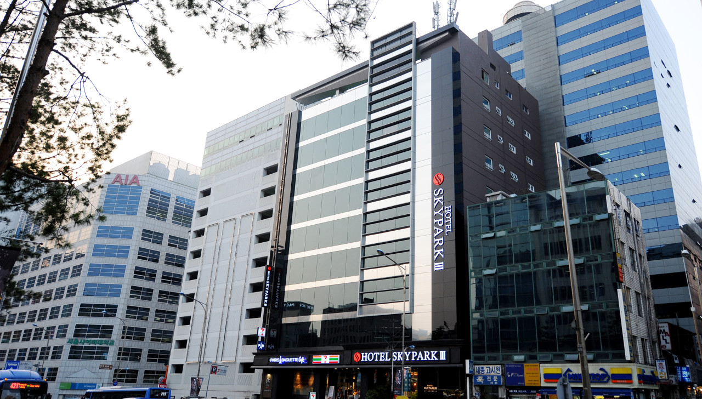
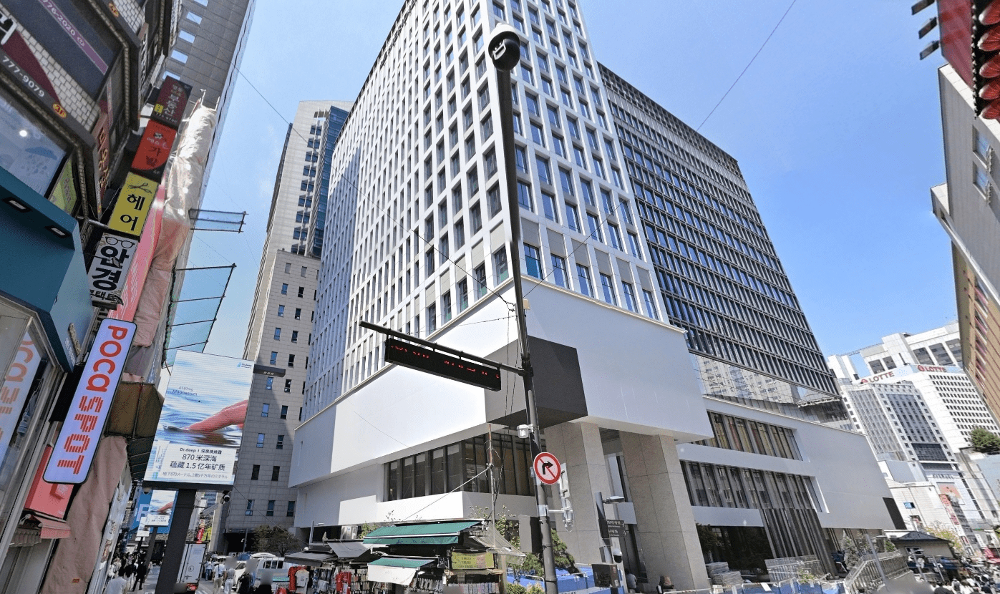
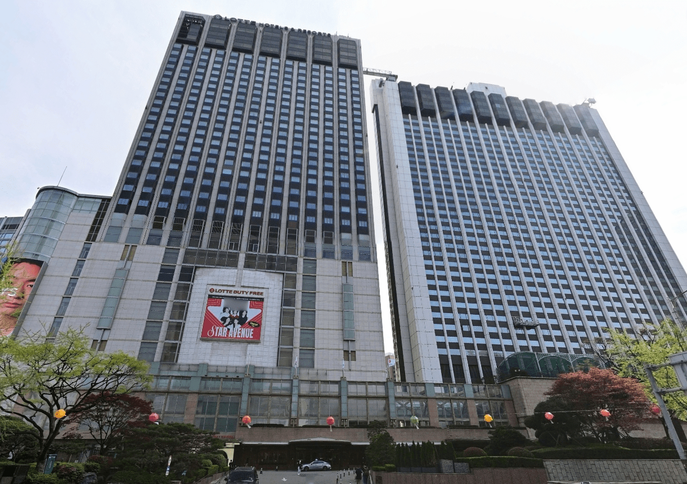
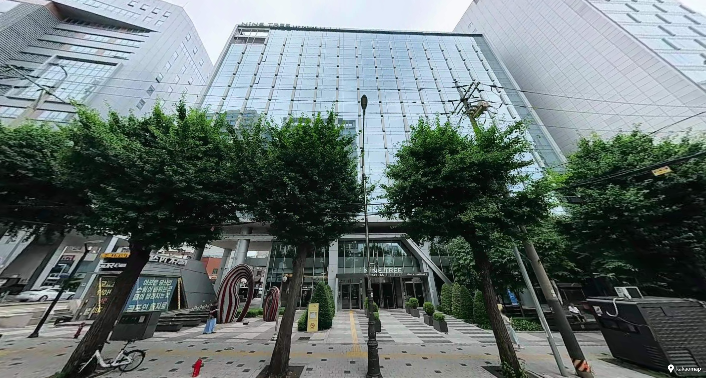

Where in Myeongdong Should You Stay?
- Most first-time visitors Myeongdong Station
- City Hall, Gwanghwamun and Jongno days Euljiro 1-ga / Sogong-dong
- Several subway lines across Seoul Euljiro 3-ga
- Shopping as part of the stay Central Myeongdong
For most first-time visitors, the Myeongdong Station side is the easiest default. The main shopping streets are simple to understand, Line 4 is close and returning to the hotel during the day is practical.
Euljiro 1-ga and Sogong-dong can work better when City Hall, Gwanghwamun and Jongno shape more of the itinerary. The Euljiro 3-ga side is worth considering when several subway lines and repeated journeys across Seoul matter more than stepping directly into Myeongdong's busiest streets.
The right hotel therefore depends on more than price or star rating. The useful comparison is location, transport access, luggage practicality, airport connections and the routes you expect to repeat around Seoul.
A Myeongdong Station hotel works differently from one near Euljiro 1-ga or Euljiro 3-ga. The difference becomes clear when you arrive with a suitcase, take the subway several times a day or return with shopping bags.
Easiest for a first trip
Stay on this side if you want the easiest version of Myeongdong to use. Line 4, the main shopping streets and the hotels around the station all fit into the same daily routine, which is especially convenient on a first Seoul trip or when you expect to come back with shopping bags during the day.
With luggage, however, “next to Myeongdong Station” does not tell you enough. Some exits are much easier than others with a suitcase, so check the exit you will actually use and the final sidewalk to the hotel rather than choosing by map distance alone.
Look toward Euljiro instead if most of your days are built around City Hall, Gwanghwamun or Jongno and you do not need Myeongdong Station several times a day.
When shopping is part of the stay
Stay in central Myeongdong when shopping is part of the day, not just one stop on the itinerary. You can drop off bags, take a break and head back out without planning another subway ride, which is the real advantage of having the pedestrian shopping streets around the hotel.
The same location is less convenient when you depend on taxis or arrive with bulky luggage. Busy pedestrian streets can make the final approach more awkward than the address suggests. If smooth vehicle access matters more than having Myeongdong outside the door, one of the station- or Euljiro-side hotels may be easier.
Better for northern central Seoul
This side starts to make sense when several days of the trip pull you toward City Hall, Gwanghwamun or Jongno. Euljiro 1-ga puts Line 2 into the daily routine, so you do not have to keep returning to Myeongdong Station just because the hotel is marketed as a Myeongdong stay.
Do not choose it only for the Myeongdong name. If you expect to use Line 4 repeatedly or want the main shopping streets immediately outside the hotel, the station side will feel simpler. Stay here when the wider central-Seoul route matters more than being closest to Myeongdong Station.
More subway coverage, less Myeongdong intensity
The main reason to stay near Euljiro 3-ga is the subway network. Lines 2 and 3 give you more flexibility on days that move in different directions across Seoul, and you come back to streets that feel less dominated by Myeongdong’s main shopping area.
That advantage only matters if you actually use those lines. If most evenings end in central Myeongdong and you want the shopping streets immediately outside the hotel, the extra walk will get old quickly. Choose this side for the subway network, not for the full Myeongdong atmosphere.
| Hotel | Main reason to choose it | Transport advantage | Main trade-off |
|---|---|---|---|
| L7 MYEONGDONG by LOTTE HOTELS | First trip, Myeongdong Station and luggage routes | Myeongdong Station and Line 4 | The nearest route may not be the easiest with luggage |
| Hotel Skypark Myeongdong Ⅲ | Straightforward station convenience | Myeongdong Station focus | Hotel experience is secondary to location |
| Le Méridien Seoul, Myeongdong | Central Myeongdong and hotel quality | Central access within the district | Less station-focused than the Myeongdong Station choices |
| Hotel28 Myeongdong | Inside Myeongdong with larger room options | Euljiro 1-ga and a nearby airport-bus stop | Less convenient if Line 4 is your everyday route |
| Royal Hotel Seoul | Fuller hotel stay and 3–4-person room options | Between Myeongdong and Euljiro 1-ga | More hotel than you need if the room is only a base |
| THE GRAND LOTTE SEOUL | Full-service stay and northern central Seoul | Euljiro 1-ga and Line 2 | Less useful when Myeongdong Station anchors the day |
| NINE TREE BY PARNAS SEOUL MYEONGDONG II | Multi-day travel across Seoul | Euljiro 3-ga and Lines 2 and 3 | Farther from the pedestrian shopping core |
| Sotetsu Fresa Inn Seoul Myeong-dong | Simple base between two subway stations | Myeongdong and Euljiro 1-ga | Standard double rooms are compact |
| ibis Ambassador Seoul Myeongdong | Practical stay with easy airport-bus access | Euljiro 1-ga and airport limousine access | Farther from Myeongdong Station and the southern shopping core |
| Moxy Seoul Myeongdong | Conventional hotel option for larger families and groups | Central Myeongdong location | Group capacity depends on the exact room type |
| UH Suite The Myeongdong | Six people can stay together in one multi-room unit | About one minute from Myeongdong Station | Capacity and layout vary by suite and building |
This is a location and travel-fit comparison, not a fixed ranking by price, category or star rating.
This page contains affiliate links.
Hotel rates vary significantly by date, room type, occupancy and cancellation policy. Compare the final price and conditions before booking.
The 11 hotels below are not one ranking. Start with the part of Myeongdong you want to use every day, then compare room setup, airport access and how much of the hotel itself matters to the trip.
Stay on the Myeongdong Station side when this is your first Seoul trip, Line 4 will be part of several days, or you expect to return to the hotel between sightseeing and shopping. It is the easiest part of Myeongdong to understand, but a short map distance does not always mean the easiest luggage route, so the station exit still matters.

L7 keeps the decision simple when Myeongdong Station is the center of your stay. Line 4, the shopping streets and the hotel all sit in the same daily loop, which works well on a first trip or when you expect to come back with shopping bags during the day.
The luggage reality. Exit 9 is the shortest route to L7 MYEONGDONG by LOTTE HOTELS, but it involves stairs. Exit 7 is about 133 metres from the hotel and has an escalator, so it can be the easier option with a large suitcase even though the walk is slightly longer. From Exit 7, the final approach follows a broad, mostly level sidewalk.
Light luggage: Exit 9. Large suitcase: Exit 7.
L7 and Hotel Skypark Myeongdong Ⅲ share almost the same station zone. Choose L7 when you also care about the hotel experience; choose Skypark III when straightforward station convenience matters more.

Skypark III is the simpler choice when you want to stay right by Myeongdong Station and do not need the hotel itself to be a big part of the trip. Line 4 and the main shopping streets are close at hand, which makes the location easy to use on a short first visit.
Do not assume that being beside the station solves the luggage route. Check the elevator or escalator exit and the final street approach before you arrive. Its strongest reason to book is the location itself. If the hotel experience matters just as much as the station, compare the fuller-service options above.
Stay deeper inside Myeongdong when shopping, restaurants and evening walks are part of the stay rather than places you visit once and leave. The advantage is being able to step outside into the pedestrian core; taxis, luggage and repeated Line 4 use can be less straightforward here than at the station-side hotels.

Le Méridien works when you want to stay inside Myeongdong’s shopping core and still come back to a full-service hotel. Shopping and restaurants are around the property, so dropping off bags or taking a break during the day does not require planning the stay around a subway exit.
If your decision is mostly about Line 4 or the simplest station routine, L7 or Hotel Skypark Myeongdong Ⅲ is easier to justify. Choose Le Méridien when being inside central Myeongdong and having a more complete hotel stay both matter to the trip.
NAVER Map search: 르메르디앙 서울 명동
Hotel28 Myeongdong makes more sense when being inside the shopping and restaurant streets matters more than having Myeongdong Station at the door. The hotel sits on Myeongdong 7-gil, with Euljiro 1-ga Station about 300 metres away. The 6015 airport-bus stop at ibis Ambassador Myeongdong is also only about 80 metres from the hotel, which gives this central position a surprisingly practical arrival route.
The rooms are also less uniform than the boutique-hotel label might suggest. The Standard Queen is 22.1 m² for two people, while the Family Twin is 38.5 m² with two queen beds for up to four. That can matter when a couple wants more room or a family of four wants to stay together, but the larger room categories should be compared by actual price rather than assuming Hotel28 is automatically good value.
This is not the hotel I would choose simply because someone says “stay near Myeongdong Station.” The reason to book it is different: you want to step outside into Myeongdong itself and still have a workable Euljiro and airport-bus route. If Line 4 at Myeongdong Station will be your main transport every day, L7 or Skypark III keeps that routine simpler.
Royal Hotel Seoul sits in a part of Myeongdong that works differently from the hotels clustered around Myeongdong Station. It is about a five-minute walk from Myeongdong Station and six minutes from Euljiro 1-ga, placing it between the two lines rather than making either station the whole reason for the stay.
What changes the decision here is the hotel itself. Royal Hotel Seoul has a fuller range of rooms than a basic city hotel: standard doubles are 22 m², while the hotel also lists Family Twin, Triple, Korean Suite and Premier Quad layouts. The Triple is 35 m² and the Premier Quad 44 m², so three or four adults do not automatically have to split into two standard rooms.
There is also more reason to spend time inside the property, including the 21st-floor dining and lounge spaces. That makes Royal Hotel Seoul a different proposition from a hotel chosen mainly for the shortest station walk. But if your plan is to leave early, return late and use Myeongdong Station repeatedly, paying for a fuller hotel setup may add little to the trip.
Look toward Euljiro when Myeongdong is only one part of the trip and several days continue toward City Hall, Jongno, Gwanghwamun or other parts of Seoul. The reason to stay here is the wider subway network and easier movement across central Seoul, not having the busiest Myeongdong streets immediately outside the hotel.

THE GRAND LOTTE SEOUL makes more sense when Myeongdong is only one part of a wider central-Seoul trip. Euljiro 1-ga puts Line 2 into the daily routine, and routes toward City Hall, Gwanghwamun and Jongno fit this location better than they do from the Myeongdong Station side.
Do not choose it just because it is grouped with Myeongdong hotels. If Line 4 and the pedestrian shopping streets are what you expect to use most, L7 or Hotel Skypark Myeongdong Ⅲ will feel simpler. The reason to stay here is the combination of a full-service hotel and a location that works better for northern central Seoul.
The hotel was formerly called Lotte Hotel Seoul, and some transport information may still use that name. If an airport-bus stop or route description says “Lotte Hotel Seoul” at Euljiro 1-ga, it refers to this property.

Choose NINE TREE II when the subway network matters more than having Myeongdong Station outside the door. Euljiro 3-ga gives you Lines 2 and 3, so this location makes more sense on a trip that keeps moving across different parts of Seoul instead of returning to the same shopping streets every day.
Do not book it expecting the full Myeongdong atmosphere outside the hotel. The main shopping core is farther away, and with luggage the final walk still deserves attention. Also check the exact property name before navigating — Seoul has more than one Nine Tree hotel with a similar name.
NAVER Map search: 나인트리 바이 파르나스 서울 명동 II
Airport limousine routes and stop locations can change. Check current official information before travel.
These hotels make more sense when most of the trip happens outside the room. You still get a useful Myeongdong location, but the decision is more about practical transport, airport access and price than about spending time inside the hotel. They are less convincing if room size, hotel facilities or a more memorable stay are priorities.
Sotetsu Fresa Inn Seoul Myeong-dong fits a trip where the room is mostly somewhere to sleep, shower and leave your bags between long days outside. The hotel sits about five minutes on foot from both Myeongdong Station and Euljiro 1-ga Station, so you are not locked into one subway line when plans change. The trade is room space: the standard double rooms are only 12.3–14.4 m², although larger twin categories are available.
There is no restaurant inside the hotel, and the property is cashless. Breakfast or meal vouchers are used at nearby restaurants instead. That setup is easy enough for travelers who expect to eat around Myeongdong anyway, but it is less attractive if you want a substantial hotel breakfast, room to spread out, or most services under one roof.
ibis Ambassador Seoul Myeongdong is more useful when the edge of Myeongdong is actually an advantage. Euljiro 1-ga Station is roughly a three-minute walk away, while Myeongdong Station is farther at about eight minutes. More importantly on airport days, Accor currently lists an airport limousine bus stop directly in front of the hotel.
The standard rooms are 21 m², and Accor lists double, twin and three-single-bed layouts with capacity up to three people. That gives three travelers a straightforward hotel option without moving into a family-suite category. But someone who expects to step straight out into the pedestrian heart of Myeongdong may prefer one of the hotels farther south; this property sits closer to Namdaemun-ro and Euljiro 1-ga, and that difference becomes noticeable when Myeongdong Station is the route you plan to use every day.
Start here when the main problem is not the neighborhood but fitting everyone into a workable room. Standard Seoul hotel rooms become difficult for five or six people, so larger hotel layouts or multi-room suites can be more useful than booking two separate rooms. The exact occupancy and room type still need to be checked before payment.
Moxy Seoul Myeongdong keeps the conventional-hotel experience available to larger families and groups. Marriott lists room types such as Quad Bunk, Family Queen Queen and the much larger Moxy Suite, while the hotel also has a 24-hour front desk, elevators and luggage storage. Children are accepted, but cribs and extra beds are not, so the full number and ages of guests should be entered before comparing rooms.
The room type matters more here than the hotel name. Some layouts are built for groups, but that does not mean every available room can take the whole party. On busy dates, a family may still end up needing two rooms. This is the option to check when you want central Myeongdong and a staffed hotel rather than an apartment-style stay.
UH Suite The Myeongdong solves a different problem: keeping six people in one unit without turning the stay into two separate hotel rooms. Its own booking system currently lists a Superior Family Suite for six with two bedrooms, three beds and two bathrooms, and a Standard Triple Suite for six with three bedrooms. The brand describes this Myeongdong property as offering accommodation for 2–8 guests.
The layouts are closer to suite or serviced-apartment living, with a living area and kitchen in the six-person options. Myeongdong Station is about a minute away on foot, and current OTA listings show an elevator and a staffed 24-hour front desk.
Do not assume that every UH Suite room sleeps eight. Capacity, bedroom count and bathroom count change by room type, and the property uses more than one building. For a family or group booking, the exact suite name matters here much more than it does at a standard hotel.
An airport bus is useful only when the actual drop-off stop and final walk work for the hotel. A route that looks direct can still end with a long walk or an awkward street crossing, so do not judge airport access from “airport bus available” alone.
With a large suitcase, check the station-exit stairs, available elevator or escalator, final walk, road crossings and the street segment to the entrance. Airport limousine routes and stops can change, so confirm the current official information before travel.
Myeongdong remains one of the easiest bases for a first Seoul trip because sightseeing, shopping, food and transport can be combined without learning a different neighborhood for every basic task. It works especially well for shorter trips when central sightseeing is a priority.
It is not automatically the best choice for everyone. A trip focused on Seongsu, Jamsil or Gangnam can involve repeated cross-city travel, Hongdae may fit better when nightlife and late cafés shape several evenings, and another central neighborhood can feel calmer and more residential.
The advantage of Myeongdong is not that everything in Seoul is next door. It is that a first-time visitor can manage many different kinds of days from one relatively easy base.
For most first-time visitors, start with the Myeongdong Station pair. L7 makes sense when you want the location and a fuller hotel stay; Skypark III keeps the decision more focused on station convenience.
If Myeongdong Station is not the route you will repeat, let the subway network decide. THE GRAND LOTTE SEOUL works from the Euljiro 1-ga side, Le Méridien keeps you inside the shopping core, and NINE TREE II is the option to compare when Lines 2 and 3 matter more than the Myeongdong atmosphere outside the door.
After that, compare the same room type, occupancy and cancellation conditions across booking sites. Rates change; the location you will use every day does not. If you are still comparing neighborhoods, return to the Seoul Stay Guide.
Yes. It is one of the easiest areas for combining central sightseeing, shopping, restaurants and public transport. Its main disadvantages are crowds, a tourist-oriented atmosphere and often compact hotel rooms.
Myeongdong Station is the easier default for a simple first trip and Line 4 access. Euljiro can be better when Line 2 or journeys toward City Hall, Jongno and other parts of Seoul shape more of the itinerary.
L7 MYEONGDONG by LOTTE HOTELS and Hotel Skypark Myeongdong Ⅲ are both strong choices for Myeongdong Station and sit in much the same location zone. Hotel Skypark Myeongdong Ⅲ is the more straightforward 3-star option, while L7 is a 4-star choice that puts more emphasis on the overall hotel stay.
There is no single answer based only on distance. Elevator access, airport-bus stop location, road crossings and the final route to the hotel entrance all matter. Check the actual arrival route before booking.
It is touristy. For many first-time visitors, that is partly why it works: restaurants, shopping, exchange services and transportation are easy to find. Travelers looking for a more residential or local neighborhood may prefer another area.
Research checked: August 2026. Korea Inside distinguishes official transport information from traveler reports and does not present unverified walking times or hotel experiences as firsthand experience.